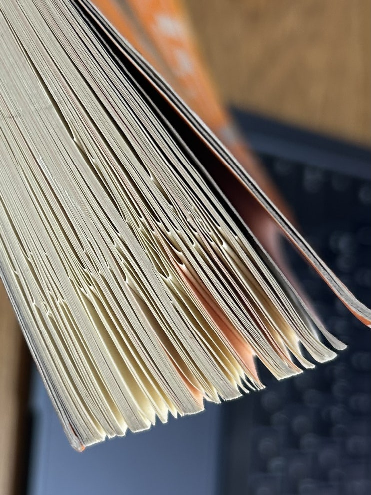

오래간만에 제가 두고 두고 읽는 책 Stick을 다시 한번 읽어 보았습니다. 2011년 쯤 샀던 것 같은데, 시간이 참으로 많이
흘러 책이 색이 다 바랬습니다.
이 책은 어떤 메시지가 머릿속에 남는 것인지 연구하고 그 결과를 쓴 책입니다. 아무래도 주제에 맞추어 머릿속에 남는 이
야기에 대해서 이야기를 하다보니 책 전체가 재미있는 이야기로 가득 차 있습니다. 그러다 보니 무척 재미있으면서도 실제
세상에서 적용할 것들이 너무 많은 매우 실용적인 특이한 책입니다.
제가 일반적으로 책을 읽다가 내용이 좋으면 귀퉁이를 접는 습관이 있는데, 이 책은 정말 많이 접혀 있네요.
이러면 알라딘
중고서적 최하 평점임 ㅋㅋ

책은 다음과 같이 6개의 핵심으로 구분하여 도대체 재미있고 머릿속에 남는 이야기들이 어떤 특징을 가지는지를 재미있는
이야기들과 함께 알려줍니다 (이야기가 정말 재미있음).
1. 단순성 :
무익한 상세 내용이 아닌 목표 메시지를 간결하게 전달해야 한다.
2. 의외성 :
예상치 못했던 내용으로 독자를 놀라게 한다
3. 구체성 :
추상적인 내용보다 선명한 내용이 기억에 남는다
4. 신뢰성 :
믿을만한 세부사항을 제공하면 기억에 남는다.
5. 감성 :
사람들을 감정적으로 자극해서 무언가를 ‘느끼게’ 해야 한다
6. 스토리 :
기억에 남는 스토리들은 패턴이 있다
- 도전 플롯 : 난관과 시련의 극복 / 다윗과 골리앗, 다이어트 사례들
- 연결 플롯 : 사람간의 사랑과 연결 / 러브스토리, 재난구조 이야기
- 창의성 플롯 : 멋진 아이디어의 발견 / 뉴턴의 사과, 유레카 이야기
회사에서 일을 할 때, 누군가 앞에서 발표를 할 때, 제가 블로그를 쓸 때 모두 도움이 된 책으로 여러분도 기회가 있으시다
면 꼭 읽어보시길 추천합니다.
끝.